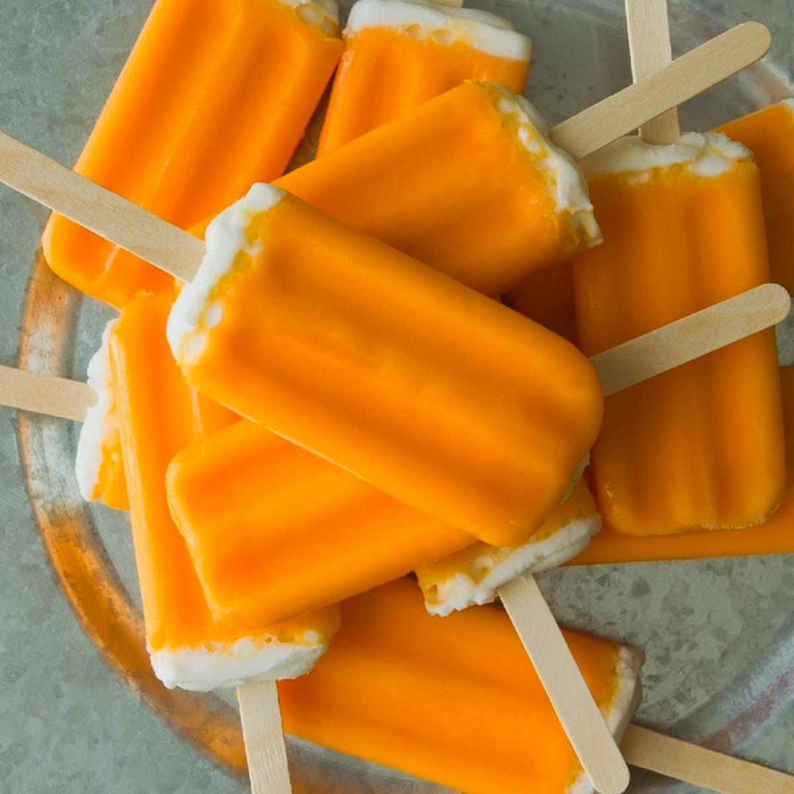

Creamsicle

Description:
Creamsicles are wonderful and now I'm just going to write a few random sentences to fill space. For instance, this sentence, which is not about creamsicles, but IS in fact a second sentence. The third sentence is foreshadowing - for it is within this sentence that you, the reader, first learn that the fourth sentence is the final sentence of the first paragraph. This is the fourth sentence, and is the final sentence of this paragraph.
This is a second paragraph to fill out space. Creamsicles are apparently inspiring enough to warrant two full paragraphs. Really, this is all fluff to help with SEO . . . I know that no one recipe hunting online cares about my kids, my religious beliefs, or my sneaky ways to get my family eating healthier foods. They just want to make a meal in under twenty minutes so they can unwind at the end of the day. I bet they care about my random pet pictures though . . .
Ingredients:
- vanilla ice cream
- orange sherbet
- popsicle sticks
- popsicle making tray
- a freezer
- a room big enough to house a freezer
- a source of electricity to power a freezer
- the will to make delicious creamsicles
Steps:
- Make sure your electric bills and mortage/rent are paid up. You won't get far in this endeavor without a venue with electricity!
- Line the walls of the popsicle making tray with orange sherbet. I won't tell you the best way to do this because this is an online recipe and it is being written by a non-professional.
- Fill the orange sherbet-lined popsicle making tray with vanilla ice cream. I could tell you that letting the ice cream get soft by having it sit out for a bit first would be useful, but instead how about a funny anecdote about my five-year-old?
- Put the sticks into the tray. Make sure they are centered in each cavity of the tray or else your family and friends will post about your incompetence on their social media.
- Remember the freezer? Put the tray in the freezer.
- Wait for an hour for everything to firm back up.
- Remove the tray from the freezer, carefully remove the creamsicles, and eat the creamsicles. Be mindful that you don't accidentally ingest the stick . . . my neighbor ended up in the hospital after swallowing the stick once! It was so wacky and unprecedented that I think it's worth including here as a means to get my word count up!